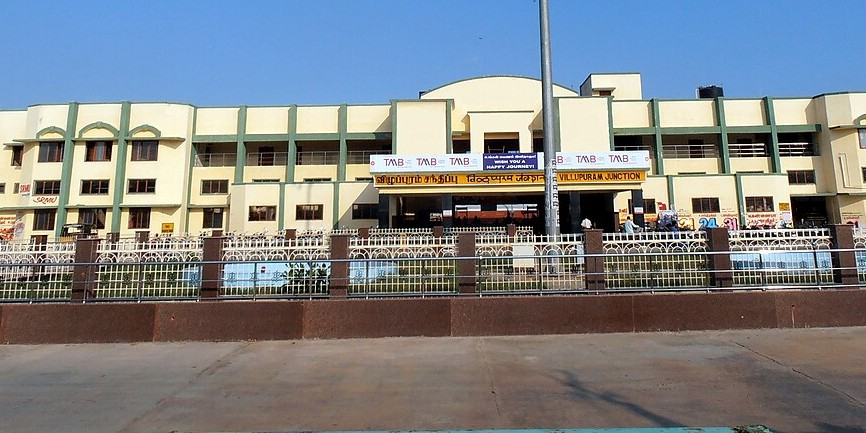

Villupuram Junction (VM) is a major and busy railway station in Tamil Nadu that serves as a vital interchange for trains connecting Chennai to the southern and central parts of the state. As of June 2024, the station was undergoing redevelopment under the Amrit Bharat Scheme to enhance its amenities and infrastructure. Key features Connectivity: Villupuram is a crucial junction where train lines diverge, connecting to various parts of South India. It is a major hub for trains going to and from Chennai, Tiruchirappalli, Ramanathapuram, and other southern destinations.
